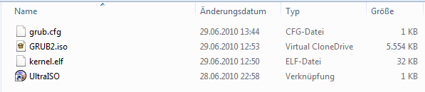

GRUB 2
| Allgemeines | |
|---|---|
| Name: | GRand Unified Bootloader 2 |
| Entwickler: | - |
| Akt. Version: | 1.98 |
| Lizenz: | GNU GPL Version 3 |
| Plattform: | Unix |
| Homepage | |
Der GRand Unified Bootloader2 (GRUB2) ist ein kompletter Rewrite von GRUB legacy und ist wie sein Vorgänger ein Multiboot-konformer Bootloader.
Inhaltsverzeichnis
Funktionen
- Liest ext2, ext3, UFS, UFS2, ReiserFS, FAT, NTFS, ISO9660, JFS, Minix, FFS, XFS, ext4
- Auswahlmenü um verschiedene Betriebssysteme zu laden.
- Bootet von Disketten, Festplatten, CDs, DVDs und Flashdisks.
- Beinhaltet eine Shell
- Kann mit einem Passwort gesichert werden
- Kann von einem TFTP-Server booten
- Scripting-Support mit Lua
- Grafische Benutzerschittstelle (nicht mit einer klassischen GUI bzw. einem Desktop zu verwechseln!)
- Dynamisches Laden von Module auch während der Laufzeit
- Unterstützung neuer Architekturen
- Internationalisierung
- Modulares und objektorientiertes Framework für Dateisysteme etc.
- Cross-Plattform-Installation
CD-Image erstellen
Linux
Wenn GRUB2 installiert ist, dann muss folgendes auf der Kommandozeile eingegeben werden:
grub-mkrescue --output=GRUB2.iso /boot/grub
Diese muss dann noch mit dem eigenen Kernel und ggf. Modulen sowie der grub.cfg zusammengeführt werden.
Windows
Unter Windows gibt es noch keine Möglichkeit, ein CD-Image von GRUB2 zu erstellen. Am besten nimmt man ein Fertiges.
Dafür ist das Ändern des Images sehr einfach. Man lädt UltraISO herunter, falls man Windows-User ist (das Programm ist Shareware und bis 300MB begrenzt). Wenn UltraISO heruntergeladen und installiert ist, sollte man folgende Dateien in einem Ordner haben: Das GRUB2.iso-Image, die grub.cfg und alle für das eigene OS nötigen Dateien (Kernel, Module, Programe etc.).
Das sollte dann so ausehen:

Die grub.cfg sollte folgenden inhalt haben:
set timeout=15
set default=0
menuentry "_OS_"
{
multiboot /boot/kernel.elf
boot
}
Wenn das der Fall ist, UltraISO starten, den "Weiterhin testen..."-Button betätigen,
auf Datei->Öffnen klicken und dann das GRUB2-Image auswählen und öffnen.
Das Fenster sollte dan wie folgt aussehen:
In der Verzeichnisstruktur zu dem Ordner mit der grub.cfg und den eigenen OS-Dateien wechseln. Das Fenster sollte dann den Inhalt des Ordners beinhalten.
Kernel ins Image bringen: Obenb Links auf den Ordner "boot" und unten rechts auf die eigene Kernel-Datei klicken. Klicke auf den makierten Button.
grub.cfg ins Image bringen: Oben links auf das Plus neben dem Ordner "boot" klicken und dann auf den Ordner "Grub". Die grub.cfg auswählen und auf den markierten Button klicken.
Auf "Datei->Speichern" klicken.
Nun ist das Image bereit, um auf einem echten PC oder einem Emulator gebootet zu werden. Achtung: Bedanken, dass immer, wenn sich etwas am Kernel oder den Modulen ändert, diese erneut dem Image hinzugefügt werden müssen.
grub.cfg
Die grub.cfg Datei ist die neue Konfigurationsdatei von GRUB2. Sie ist das Äquivalent zur grublst von GRUB legacy.
Hier ein Beispiel:
set timeout=15
set default=0 # Set the default menu entry
menuentry "_OS_"
{
multiboot /boot/kernel.elf
boot
}
Diese Konfigurationsdatei würde die Kerneldatei Kernel.elf aus dem Ordner "boot" laden und danach ausführen.
wichtige Befehle
| Befehl | Beschreibung |
|---|---|
| multiboot /pfad/zum/kernel/dein-kernel.datei | Lädt deinen Kernel in den Speicher. um in danach auszuführen. |
| boot | Startet dein zuvor mit dem Befehl multiboot geladenen Kernel. |
Siehe auch